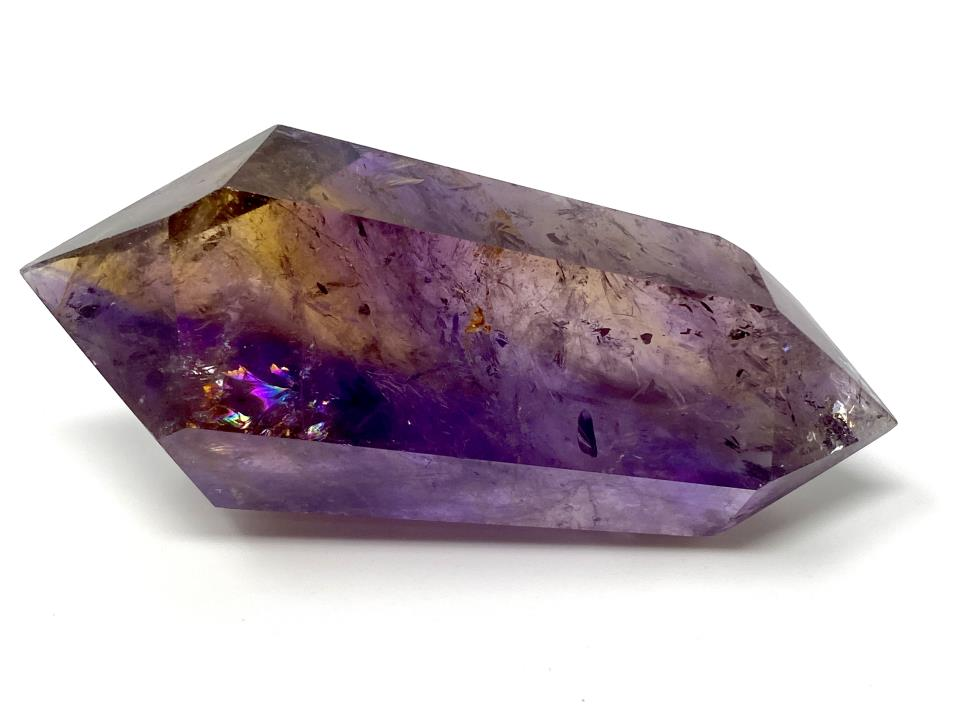

Ametrine
Information
Ametrine are a type of quartz crystal that helps to enhance mental and spiritual clarity. The stone is found in a mine in Bolivia, Spain. Ametrine is one of the very few imaginable crystals that actually link a stone with a very physical, earthy/fiery energy with one that has a highly spiritual and intellectual energy.
Health Benefits
Link-TextOutfitInspos
Some outfits inspos who match perfectly with the black green stone